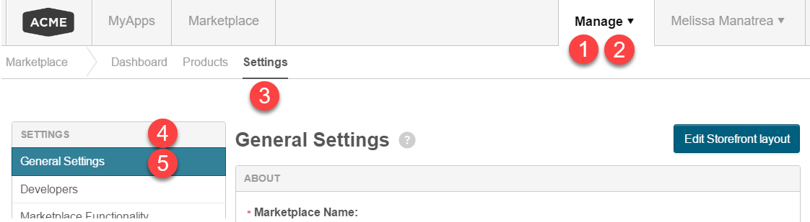

The procedures in this document use the following typographic path convention to help you navigate to the specific page where you make the settings:
Go to Manage > Marketplace > Settings > Settings | General Settings.
All words that are bold, are links, buttons, or icons you must click to navigate to the target page for the given procedure. The words in the path that are not bold (Settings in the previous example) appear in the UI but you do not click them. They are typically headings for the links grouped below them.
The following image shows the UI locations for the elements in the sample path. Note that step 2 (Marketplace) is not visible until you click 1 (Manage).
